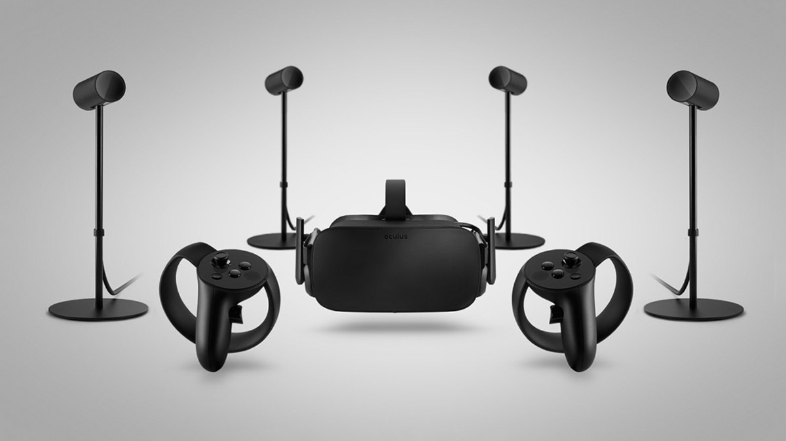
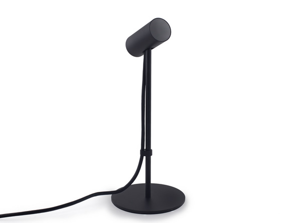
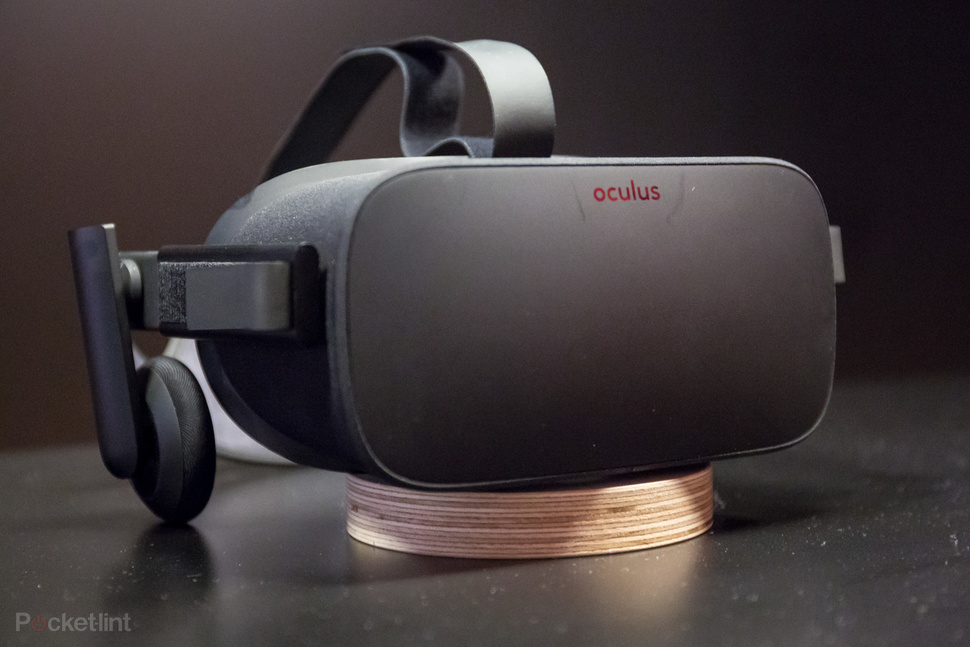
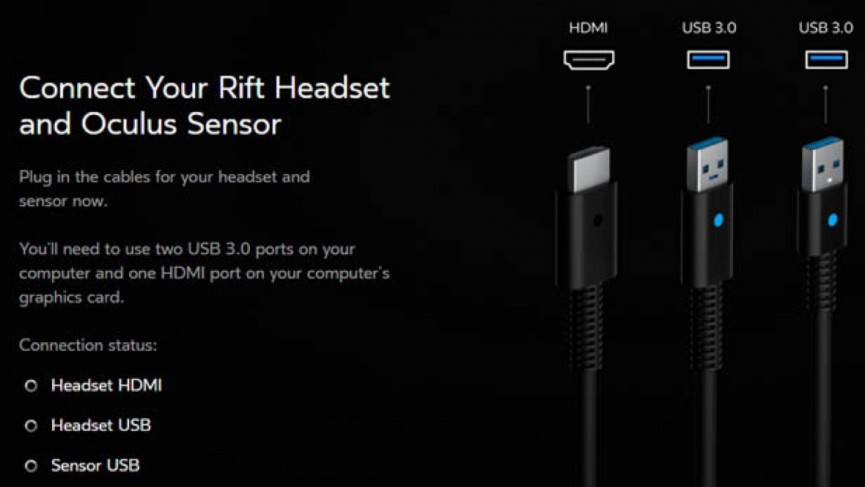
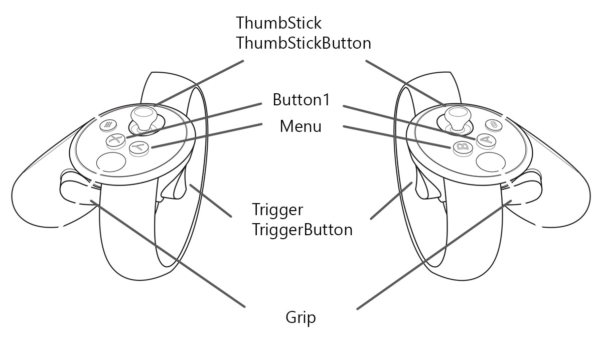
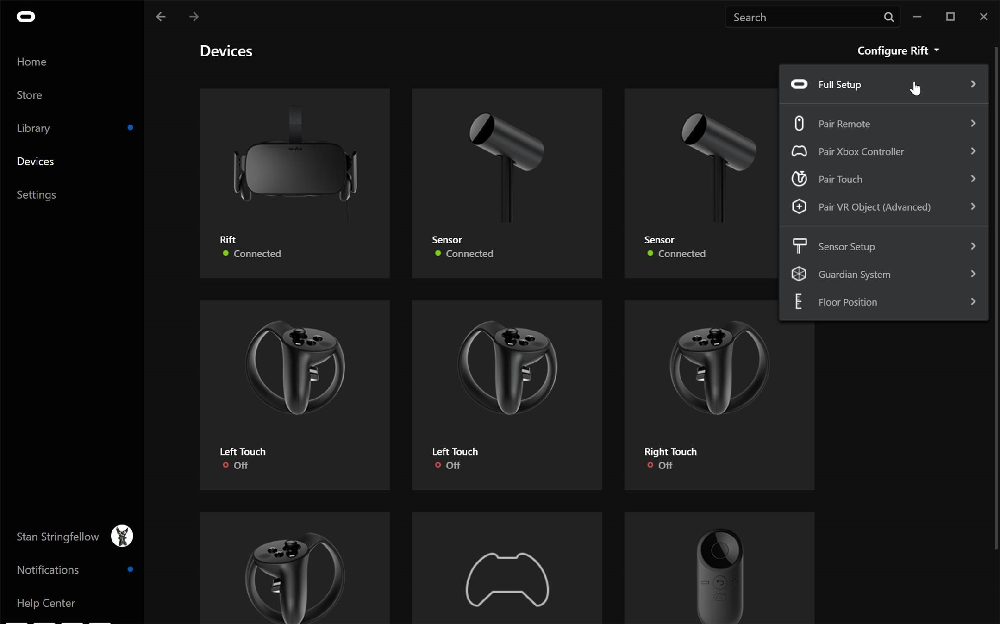
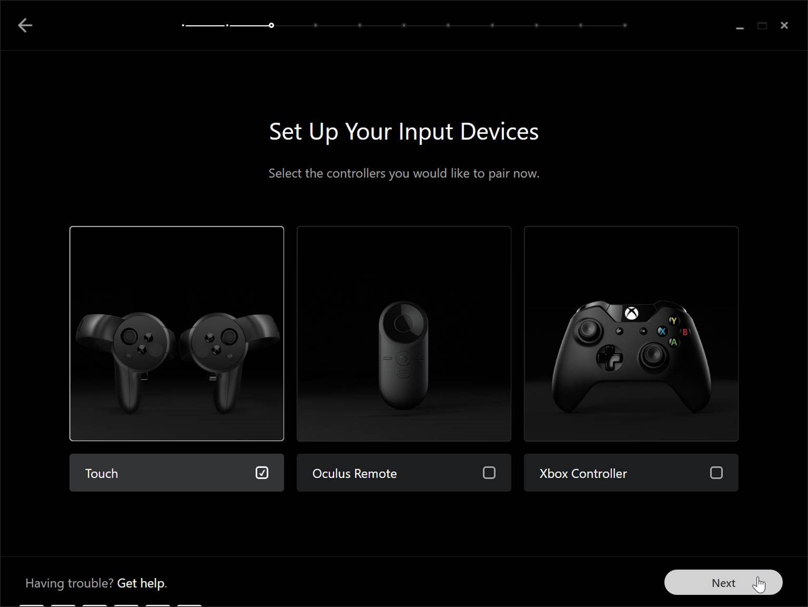
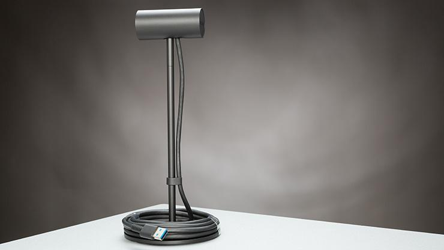

How To Set Up/Use the Oculus Rift
This page will guide you through how to set up, adjust, and use your new Oculus Rift headset, sensors, and controllers.
Equipment List
This is what you will find when you open the box:
- Four Oculus Rift sensors
- One Oculus Rift headset
- Two Oculus Rift controllers

How To Set Up the Sensors

- Place your sensors two or three feet away from you so they can track you properly
- Make sure that the lens of the sensors are facing you
- Keep the area between you and the sensors clear
- Don't forget to plug in the sensors cords to the USB port on your computer
How To Use the Oculus Rift Headset
Connect the cables to your computer when requested, both USB cables should be connected to USB 3.0 ports on your computer. When connecting the HDMI port, be sure to connect it to the HDMI port on your graphics card. Your computer may have an HDMI port that connects to the motherboard’s integrated graphics, but you don’t want to use that one for the Rift.
If you do something wrong, the setup wizard won’t let you continue. As long as it says the connection status is “OK”, you know you’ve set it up properly.
When you’re done, the wizard will instruct you to wear the headset, and will play some demos for you. After it’s done, it will enter the “Oculus Home” environment, a virtual room where you can launch games.
Parts of the Oculus Rift Headset

- There are three velcro straps–one on each side of the headset and one on the top
- Undo the straps, wear the headset, and then adjust the straps until it feels comfortable and secure
- It should be secure and not move around, but you shouldn’t have to make it uncomfortably tight
- You don’t have to loosen the straps to take the headset on and off, so you can adjust it once and leave it unless other people will be using the headset too
- The visor can be angled independently of the straps
- You’ll also want to move it up and down on your face until you find the sweet spot (don’t wear the headset like a pair of glasses resting on your nose
- Move the visor down until the piece of foam on the top of the headset is around the middle of your forehead (the difference in clarity will be immediately apparent if you’re looking at something in the Rift while adjusting this
- The IPD, or “interpupillary distance,” can be adjusted by moving the switch on the bottom of the headset to the left of or right (this adjusts how far apart the lenses are
- Adjust this while wearing the headset until it looks best

How To Use the Oculus Rift Controllers
The controllers are used to interact with objects in VR. There are several buttons on each controller:

- ThumbStick (Joystick)
- Button One (Uses for them depends on what's being played)
- Menu Button
- Trigger Button (How you interact with objects in VR)
- Grip
How To Charge the Controllers
The Oculus Rift controllers run on batteries, so if your controllers are dead, simply replace the batteries in them.
How To Use the Lanyards
The lanyards are used to keep the controller from flying form your hand while moving. While holding the controller, insert the lanyard's thread from the top to the bottom hole. Next, loop the lanyard through the thread, and then tug the lanyard to fasten it in place. Place the lanyard on your wrist, and then adjust the lock to tighten the lanyard comfortably around your wrist.
How To Pair the Controllers
You need to pair the Touch controllers in order to establish a connection between the controllers and the headset. To pair your Touch controllers, follow these steps:
- Make sure your headset is connected
- Launch the Oculus app
- In the left panel, select Devices, and then select Configure Rift > Full Setup

- Click through the informational screens that follow:
- When the Set Up Your Input Devices screen appears, select Touch, and click Next

- After another informational screen, the Pair Your Left Touch screen appears
- Hold down the Menu and Y buttons, as indicated on the screen
- After a few moments, the Left Touch controller should be successfully paired
- Continue and follow the same procedure for the Right Touch controller
Dismantlement
To dismantle the Oculus Rift, follow these steps:
Unplugging Cords
- Unplug all of the Oculus Rift headset wires and neatly coil them to prevent them from being damaged
- Carefully store the Oculus Rift controllers once they are turned off (they turn off automatically with the Oculus Rift)
- For the sensors, you must wrap the wires around their base:
